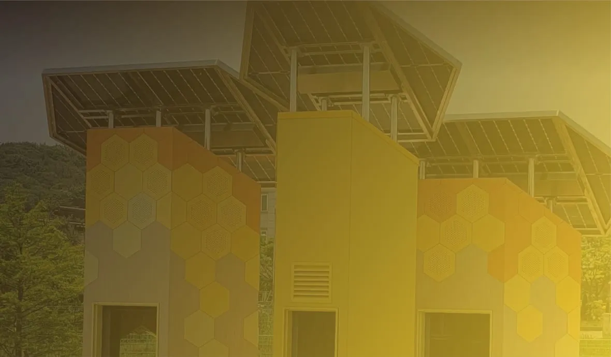
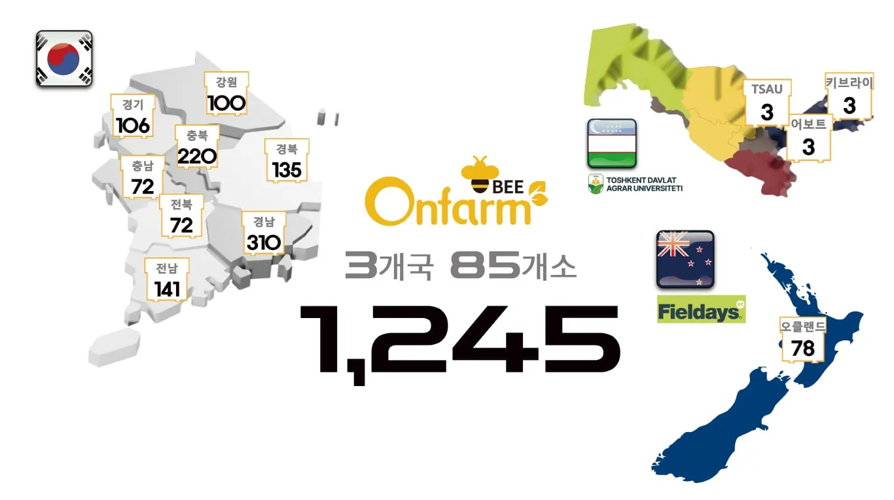
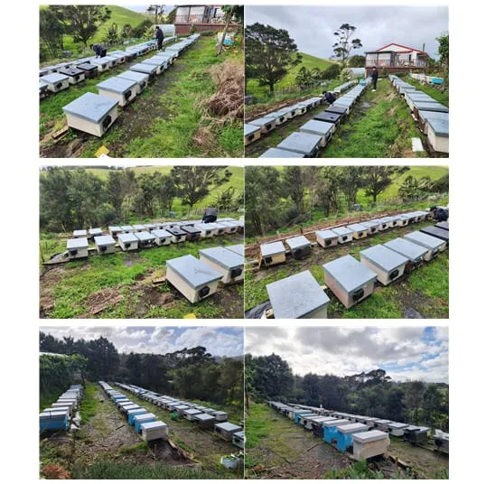

연해주에서 뉴질랜드까지, 비온팜 디지털 양봉 8년
2018년 국내 농가 6곳 실증부터 2026년 뉴질랜드 양봉 AI 실증 참여까지 연표로 정리

스마트 양봉 기업 온팜(브랜드 비온팜)은 2018년 국내 양봉농가 6곳에서 디지털 양봉 실증을 시작했다고 밝혔다. 이 실증은 8년 사이 러시아 연해주와 뉴질랜드, 우즈베키스탄으로 이어졌다. 비온팜은 기후변화와 환경오염으로 꿀벌 폐사가 급증한 양봉 산업에 스마트 양봉 기술이 필요하다며 연구 협력과 보급 사업, 해외 실증을 함께 펼쳐 왔다.
비온팜은 꿀벌의 생육환경을 모니터링하고 모바일로 벌통 온도와 사양(먹이 주기)을 관리하는 시스템을 만든다. 아래 연표는 비온팜이 2025년 4월 11일 홈페이지에 올린 2025년 소개서의 ‘개발 경과’를 중심으로 정리했다.
한눈에 보는 연표
| 연도 | 주요 내용 |
|---|---|
| 2018 | 원주·고흥·횡성 양봉농가 6곳 실증, 국립농업과학원 모니터링, 한국양봉학회 발표 |
| 2019 | 러시아 연해주 우수리스크 모니터링 |
| 2020 | 스마트팜 코리아 확산사업 참여기업 등록, 농업회사법인 설립 |
| 2021 | 농촌진흥청 IoT·AI 양봉 사양관리 기술 연구, 한국농수산대학교 인력 양성 협약, 밀원수(꿀벌의 먹이가 되는 나무) 분포 지도 서비스 |
| 2022 | 한화그룹·이노션과 ‘솔라 비하이브’ 개발, 농림축산식품부 스마트 센서 보급사업, 뉴질랜드 농업 박람회 필드데이즈(Fieldays) 참가 |
| 2023 | 농촌진흥청 시범사업, 우즈베키스탄 타슈켄트농업대학교(TSAU) 모니터링, 뉴질랜드 오클랜드 테스트베드, 월동(겨울나기) 봉군(꿀벌 무리) 모니터링 |
| 2024 | 농촌진흥청 벌 스마트 사육시설 지원사업, 강원도 인도어팜 테스트베드 |
| 2025 | (2025년 소개서 기준) 산청군 꿀벌 동면 데이터 실증, 이스라엘 비와이즈와 국제공동기술개발 참여 예정 |
| 2026 | 뉴질랜드 양봉 AI 해외실증 과제(BeeAI) 참여 |

그래픽: 비온팜이 2023년 12월 6일 홈페이지 공지사항에 올린 설치 현황 지도. 숫자는 회사가 게시한 값이다 (자료: 비온팜)연해주에서 뉴질랜드까지
소개서 개발 경과의 첫 해외 항목은 2019년 1월 러시아 연해주 우수리스크에서 개시한 모니터링이다. 비온팜은 홈페이지의 ‘2023 비온팜 주요 계획’에서 ‘K-Belt’ 구상을 밝혔다. 우즈베키스탄 TSAU의 스마트 양봉 연구에 참여하고 “우수리스크부터 우크라이나까지 이어지는 고려인 농장”을 꿀벌 증식·벌꿀 생산 장비로 지원하는 내용이다.
우즈베키스탄에서는 2023년 4월 TSAU-국립안동대학교 꿀벌 연구소 모니터링을 시작했고 같은 해 12월 홈페이지 갤러리에 TSAU와 현지 양봉농장 2곳의 스마트 벌통 설치 사진을 올렸다.
뉴질랜드에서는 2022년 11월 필드데이즈에 참가해 현지 농가에서 실증 테스트를 했다. 2023년 7월에는 오클랜드 핸더슨빌에 테스트베드를 구축해 운영을 시작했다. 같은 해 12월 갤러리에는 현지 양봉농장(Ah-Farm)에 스마트 벌통 78통을 설치한 사진이 올라왔다. 한국인이 운영하는 농장이다.

사진: 비온팜이 2023년 12월 11일 홈페이지 갤러리에 올린 뉴질랜드 양봉농장(Ah-Farm) 스마트 벌통 설치 모습 (자료: 비온팜)연구 협력과 적십자 등록
비온팜은 2018년 3월 국립농업과학원 양봉장과 한봉장(토종벌 양봉장) 모니터링을 시작했다. 한국양봉학회에서는 2018년·2023년·2024년 스마트·디지털 양봉을 주제로 발표했다. 2023년 12월에는 국립농업과학원·국립안동대학교와 꿀벌 실종 원인을 분석하는 월동 봉군 모니터링에 들어갔다.
MBN은 2021년 12월 6일 보도(비온팜 홈페이지 2023년 12월 5일 게시)에서 동서울대 김준호 교수 연구팀과 비온팜 정원기 대표, 한창테크노 한욱 대표가 함께 디지털 양봉 연구논문을 발표했다고 전했다. 이 연구가 꿀벌 개체 수 보존과 양봉농가 경영 개선에 활용될 전망이라고도 했다.
전북도민일보 2022년 3월 7일 보도에 따르면 비온팜은 대한적십자사의 ‘씀씀이가 바른 기업’ 캠페인에 동참해 전북적십자의 36호 기업으로 등록됐다. 정원기 대표는 지역사회를 위해 기부할 방법을 찾다가 캠페인에 참여했다고 말했다.
2025년 계획과 2026년 AI 실증
비온팜은 2025년 소개서의 2025년 항목에 경남 산청군 꿀벌 동면 데이터 실증 사업(산청군농업기술센터)을 3월 일정으로 올렸다. 이스라엘 디지털 양봉 기업 비와이즈(Beewise)와의 한-이스라엘 국제공동기술개발사업에는 10월에 참여할 예정이라고 적었다.
2026년에는 비온팜이 과학기술정보통신부와 정보통신산업진흥원(NIPA)의 「엣지형 AI반도체 기반 뉴질랜드형 지능형 양봉 솔루션 해외실증」 과제(BeeAI)에 참여 기관으로 합류했다. 누리인포스가 주관하고 FYD가 함께하는 이 과제에서 비온팜은 양봉 센서 장치와 뉴질랜드 양봉장 3곳의 현지 실증을 맡았다.
BeeAI 사업 전반은 벌통 입구서 응애 살핀다, 한국 기업들 뉴질랜드 실증 기사에서 다룬다.
자료: 비온팜 홈페이지(2026년 10월 8일 확인), 비온팜 2025 소개서, MBN(2021년 12월 6일)·전북도민일보(2022년 3월 7일) 보도(비온팜 홈페이지 2023년 12월 5일 게시), BeeAI 사업 홍보 자료(2026년 7월)
저작권자 © 윙윙통신 무단 전재 및 재배포 금지